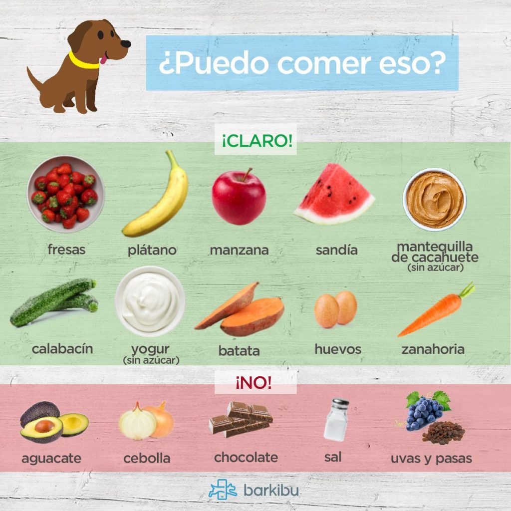
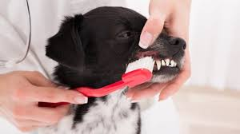
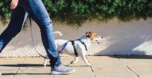

El objetivo de esta información, es difundir, dar a conocer, concientizar a la población en general,
el tema del cuidado de un nuevo integrante a la familia, como lo es un gatito o perrito y brindarle
cariño,
amor, seguridad y bienestar para su estancia y calidad de vida.
aquí te mencionamos los siguientes cuidados básicos:
Existen cuidados del perro que son esenciales para su supervivencia y bienestar. 21 julio Día
Internaciónal del Perro hablamos sobre cómo cuidar a nuestros caninos acorde a sus principales
necesidades desde que son cachorros hasta que entran en la etapa adulta.
Cuidar a un perro implica compromiso y atención en general, es importante procurar una alimentación
saludable para ellos, así como favorecer su actividad física y estimular su socialización es fundamental
ofrecerle cuidados y revisiones veterinarias para controlar su estado de salud y mejorar su calidad de
vida.
Si se trata de un cachorro recién nacido, los cuidados del perro serán continuos, incluyendo el
amamantamiento con leche materna o sustitutivo, y el destete, que se inicia a partir de las cuatro
semanas de vida y de forma progresiva.
Es muy importante tomar conciencia de que tener una mascota implica una gran dedicación y
responsabilidad debemos
estar dispuestos a cubrir todas sus necesidades este animal requiere compromiso, mimo y tiempo.No solo
se trata de
abastecerse de agua y comida, sino que hay mucho más esos son los principales cuidados del perro que
debes conocer
y aplicar para favorecer su salud.
Alimentación de calidad
Elegir un plan nutritivo y darles una buena hidratación es clave para el bienestar de los perros
hay que ofrecerles alimentos de calidad en función de su etapa de vida, según si es cachorro o
adulto si se trata de un cachorro o de un perro mayor habrá que adaptar su dieta a sus
requerimientos.

Educación animal
Enseñar a un perro es esencial para que se desarrolle satisfactoriamente
hay que indicarle dónde hacer sus necesidades, en qué espacios, qué puede hacer
y que no, y guiarlo desde el principio para inculcarle un buen aprendizaje
evitando reñirle bruscamente o gritarle, ya que así solo conseguiremos asustarle.
Higiene del perro
Hay que bañar a un perro, el promedio aproximado es una vez al mes asimismo hay que cepillarles
diariamente, y cortarles el pelo y las uñas cuando sea necesario también hay que prestar atención a
la higiene de sus oídos y ojos, para evitar la acumulación de suciedad y de lagañas.

Atención y cuidados veterinarios
Acudir al veterinario es necesario en muchos casos para revisar su estado de salud e intervenir con
el tratamiento oportuno ponerle las correspondientes vacunas, el chip y determinar un plan de
desparasitación adecuado al animal.
Paseos y actividad física
Los perros necesitan moverse y ejercitarse cada día por ello, entre los cuidados
de un perro está el sacarle a pasear al menos tres veces al día, tanto para promover
su actividad como para que pueda hacer sus necesidades vitales aparte de los paseos
también es bueno jugar con ellos en casa y mantenerlos activos de forma habitual.

¡ADVERTENCIA!
En caso de que el dueño del can no cumpla con las recomendaciónes básicas para el cuidado del perro,
será acreedor a las siguientes sanciónes administrativas o penales que establece la Ley de Protección
Animal.
Ley de Protección Animal fue publicada en la Gaceta Oficial del Distrito Federal, el 26 de febrero de
2002.
De forma general en México el maltrato animal establece de 10 a 100 días de salario
mínimo
como multa, es decir, 17 mil 287 pesos, así como entre 60 a 180 jornadas de trabajo
comunitario, así como una pena de tres meses a dos años de prisión con una multa de 150
veces la Unidad de Medida y Actualización.
*Ley No. 30407, Art. 36° y 206A° del Código Penal.
Tiene como finalidad, garantizar el bienestar y la protección de todas las especies de animales
vertebrados domésticos o silvestres mantenidos en cautiverio.
El objetivo es proteger la vida y la salud de los animales vertebrados, domésticos o silvestres
mantenidos en cautiverio, también la de impedir el maltrato o la crueldad causados directa o
indirectamente por el ser humano, en este sentido esta ley sanciona a aquellas personas que abandonan,
maltratan o matan a los animales vertebrados domésticos y silvestres mantenidos en cautiverio.
En la alcaldía Gustavo A Madero (GAM) inauguraron un hospital para todo tipo de mascotas son
gratuitos.
El animalito debe estar inscrito en el registro único de animales de compañía (RUAC),
que es lo mismo que el CURP pero para perros y llevar su cartilla de vacunación, identificación del
dueño,
collar y correa debe portar el perrito.
mor sin Raza:
Una fundación comprometida en ayudar a los perritos maltratados y en situación de calle.
Amor sin Raza rescata a los peluditos, los rehabilita, vacuna y esteriliza para que lleguen
en perfectas condiciónes a sus nuevos hogares. Asimismo, constantemente realiza campañas de
adopción y esterilización.
dóptame México:
Este lugar se encarga de buscarle un hogar a perritos y gatitos que estaban abandonados o
eran maltratados. Estas mascotas llegan a su nuevo hogar esterilizados, vacunados y rehabilitados,
listos para recibir el amor de sus nuevos padres.
ilagros Caninos:
Se trata del primer santuario en América Latina en rehabilitar perros en situaciones extremas. Por medio
de su cuenta de Instagram puedes ver todos los animalitos que tienen en adopción, al igual que en su
página de internet y en caso de que te interese, basta con que empieces el proceso con ellos.
arque México:
Todos los domingos, en este parque ubicado en la colonia Condesa de la capital mexicana, podrás
encontrar a decenas de personas que se dedican a cuidar y rescatar perros de la calle. Un buen punto si
lo que buscas es adoptar perros en CDMX.
ibliografias:
Imagenes recuperadas de::
WM_Humanidades, & WM_Humanidades. (2022, 25 marzo). Derecho de los animales II. El maltrato animal
es un foco rojo - HumanidadEsComunidad. HumanidadEsComunidad - Sitio de la Dirección General de
Divulgación de las Humanidades.
https://www.humanidadescomunidad.unam.mx/derecho-de-los-animales-ii-el-maltrato-animal-es-un-foco-rojo/
Virbac. (2022, 30 diciembre). Cuidados para mi mascota. Cuidados para mi mascota. Recuperado 11 de
noviembre de 2023, de
https://mx.virbac.com/home/todos-los-consejos/pagecontent/cuidados-y-consejos/cuidados-para-mi-mascota.html
Cómo bañar a un perro | Purina®.
(s. f.).https://www.purina.es/cuidados/perros/salud/aseo-cuidados-diarios/como-banar-perro
Cedeño, I. (2019, 1 noviembre). Cuidados básicos que todos los perros necesitan. aboutespanol.
https://www.aboutespanol.com/cuidados-basicos-que-todo-perro-necesita-2641887
Espínola, Á. (2018, 6 marzo). Aumentan un 14% las ventas mundiales en cuidados para mascotas.
Español. Recuperado 11 de octubre de 2023, de
https://www.animalshealth.es/empresas/aumentan-un-14-las-ventas-mundiales-en-cuidados-para-mascotas
Admin. (s. f.). Pet friendly Cancun Beach – Azul Travel online.
https://azultravelonline.com/blog/tag/pet-friendly-cancun-beach/
Tyk. (2018, 14 junio). Viajar con mascota: localiza el Hospital Veterinario 24 horas de Guardamar.
Clínicas Veterpet.
https://www.clinicas-veterpet.com/2018/07/25/viajar-mascotas-hospital-veterinario-24-horas/
Jornada de bienestar animal en las islas de CU, puedes llevar a tu mascota. (s. f.). Tu Red Capital.
https://tured.capital/viral/2022/8/18/jornada-de-bienestar-animal-en-las-islas-de-cu-puedes-llevar-tu-mascota-1088.html
Guiainfantil.com. (2021, 26 abril). La higiene en la convivencia de niños y animales.
https://www.guiainfantil.com/salud/higiene/animales.
Patasbox. (2023, 11 julio). Consejos de nutrición para mejorar la alimentación de tu perro -
Patasbox. Patasbox.
https://blog.patasbox.com/consejos-de-nutricion-para-mejorar-la-alimentacion-de-tu-perro/
Tabuenca, E. (2022, 23 marzo). Cómo evitar que mi perro ladre a otros perros - los mejores consejos.
https://www.mundodeportivo.com/uncomo/animales/articulo/como-evitar-que-mi-perro-ladre-a-otros-perros-los-mejores-consejos-48425.html
Admin. (2020, 5 mayo). EL MAL ALIENTO EN PERROS | LIMPIEZA DE DIENTES EN PERROS. HOSPITAL
VETERINARIO EN MEXICO 24 HORAS | ANIMAL HOME.
https://www.animalhome.com.mx/mal-aliento-en-perros/
Piedrabuena, M. B. (2022, 5 septiembre). Enfermedades cardíacas en el perro. WebConsultas.
https://www.webconsultas.com/mascotas/salud-de-la-mascota/enfermedades-cardiacas-en-el-perro
Juan Floriano – Blog de la Escuela de Veterinaria. (s. f.).
https://www.escueladeveterinaria.com/blog/author/juan-floriano
Sánchez, E. M. (2022, 1 septiembre). Denuncia San Pedro ante Procuraduría Ambiental maltrato de
perro. Grupo Milenio.
https://www.milenio.com/sociedad/san-pedro-denuncia-maltrato-perro-procuraduria-ambiental
Perro callejero local turco con ojos tristes mirando la cámara en la calle Free Photo. (2022, 26
mayo). Freepik. https://www.freepik.es/fotos-vectores-gratis/abandono-perro
Unidad Editorial Internet. (2010, 2 julio). Por qu los M dicos deben preocuparse por el maltrato
animal | Neurociencia | Elmundo.es.
https://www.elmundo.es/elmundosalud/2010/07/02/neurociencia/1278089353.html
Caballero, S. C. S. (s. f.). Coordinación de Comunicación Social - demanda la Comisión Permanente a
autoridades del país fortalecer acciones para prevenir maltrato animal.
https://comunicacionsocial.senado.gob.mx/informacion/comisionp/cp-comunicados/6583-demanda-la-comision-permanente-a-autoridades-del-pais-fortalecer-acciones-para-prevenir-maltrato-animal
De Tabasco, J. D. |. E. H. (s. f.). Nada frena el maltrato animal en Tabasco; denuncias van a la
alza. El Heraldo de Tabasco | Noticias Locales, Policiacas, sobre México, Tabasco y el Mundo.
https://www.elheraldodetabasco.com.mx/local/nada-frena-el-maltrato-animal-en-tabasco-denuncias-van-a-la-alza-9443204.html
Reuters. (2023, 19 junio). El 70% de las mascotas mexicanas sufren algún tipo de maltrato. La Razón.
https://www.razon.com.mx/virales/70-mascotas-mexicanas-sufren-tipo-maltrato-532804
Veterinarios - Veterinarios - El Sudcaliforniano | Noticias locales, policiacas, sobre México, Baja
California Sur y el mundo. (s. f.).
https://www.elsudcaliforniano.com.mx/tags/temas/veterinarios
Videos recuperados de:
Delia Ramirez. (2022, 24 junio). Compasion por los animales/No al maltrato animal. [Vídeo].
YouTube.https://www.youtube.com/watch?v=KicdiU8v4xk
Cindy D’. (2015, 21 mayo). NO AL MALTRATO ANIMAL [Vídeo].
YouTube.https://www.youtube.com/watch?v=tD1wzrSDnSk
Informacion recuperada de:
Escuela de Postgrado de Veterinaria - Formación en Salud Animal. (2023, 13 julio). Escuela de Postgrado
de Veterinaria. https://postgradoveterinaria.com/
Las mascotas en adopción: beneficios y requisitos para adoptar un perro o gato. (2022, 28 octubre).
PURINA.https://purina.com.mx/purina/perros/mascotas-en-adopción-beneficios-y-requisitos
De Seguridad Ciudadana De La Cdmx, S. (s. f.). Brigada de Vigilancia Animal (BVA). Secretaría de
Seguridad Ciudadana de la CDMX.
https://www.ssc.cdmx.gob.mx/agrupamientos/brigada-de-vigilancia-animal
Adopta un perro. (2013, 9 octubre). https://www.gob.mx/senasica/documentos/adopta-un-perro?state


 Da clic>> Ley de
Protección Animal
Da clic>> Ley de
Protección Animal